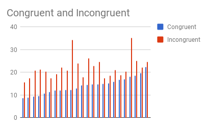

In this project, we will help to investigate a classic phenomenon from experimental psychology called the "Stroop Effect" by creating a hypothesis, regarding the outcome of the task. We will then also look at some data collected from others who have performed the same task and compute some statistics describing the results. Finally, we will interpret your results in terms of your hypotheses.
1. What is our independent variable? What is our dependent variable?
Independent variable: the words condition (congruent words or incongruent words)
Dependent variable: the time it takes to name the ink colors in equally-sized lists
2. What is an appropriate set of hypotheses for this task? What kind of statistical test do you expect to perform? Justify your choices.
H0: the population mean response time is the same for both condition
HA: the population mean response time in each condition is different
In other words:HA: µ1 ≠ µ2
The appropriatae statistical test we're going to use here is " T-Distribution (two tailed)" because of the following:
1. Sample size very samll(n=24) which is less than 30.
2. Comprising 2 dependent samples of data.
3. It is normally distributed.
3. Report some descriptive statistics regarding this dataset. Include at least one measure of central tendency and at least one measure of variability.
- Mean: 14.051
- Standard Deviation: 3.559
- Mean: 22.016
- Standard Deviation: 4.797
4. Provide one or two visualizations that show the distribution of the sample data. Write one or two sentences noting what you observe about the plot or plots.
The time it takes to name the ink colors in incongruent condition is longer than that of congruent condition
5. What is your confidence level and your critical statistic value? Do you reject the null hypothesis or fail to reject it? Come to a conclusion in terms of the experiment task. Did the results match up with your expectations?
- Confidence Interval: lower limit = -10.01,upper limit = 2.1
- t critical value: 2.07
- t statistics: 8.02